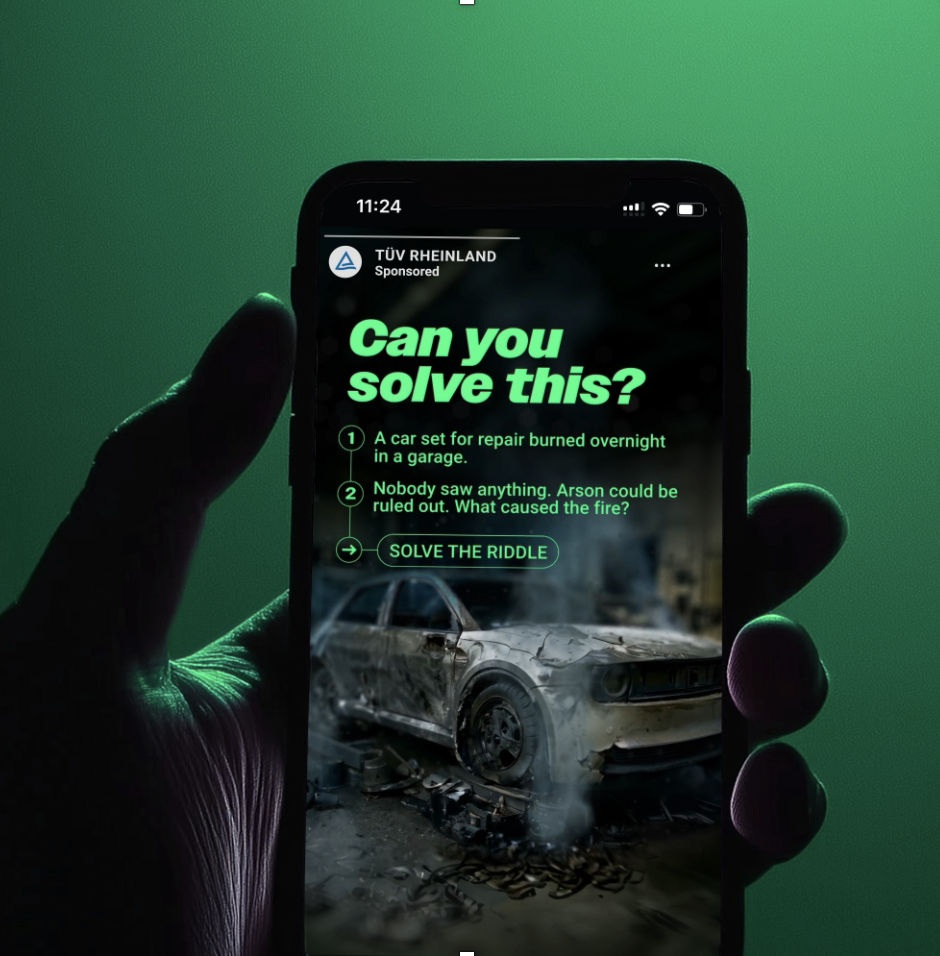
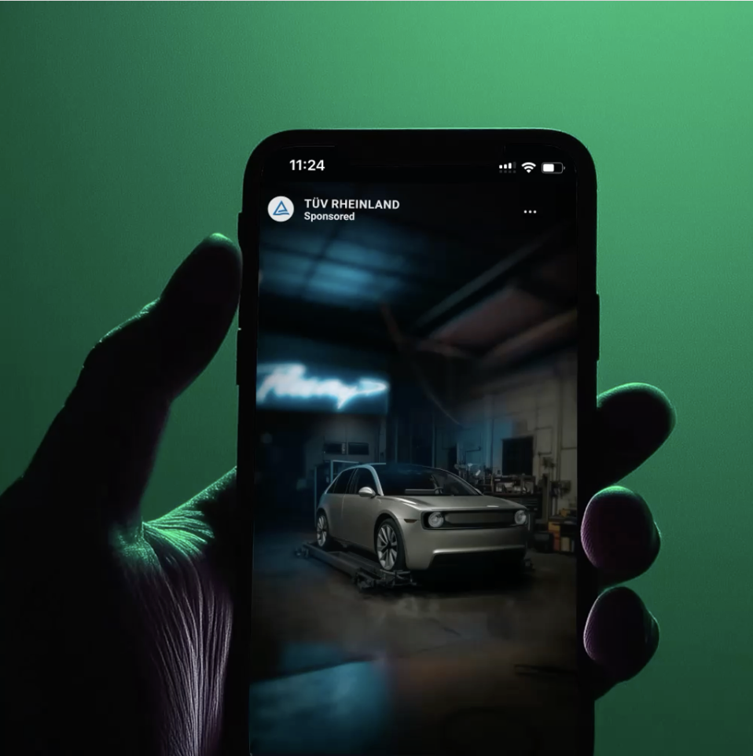
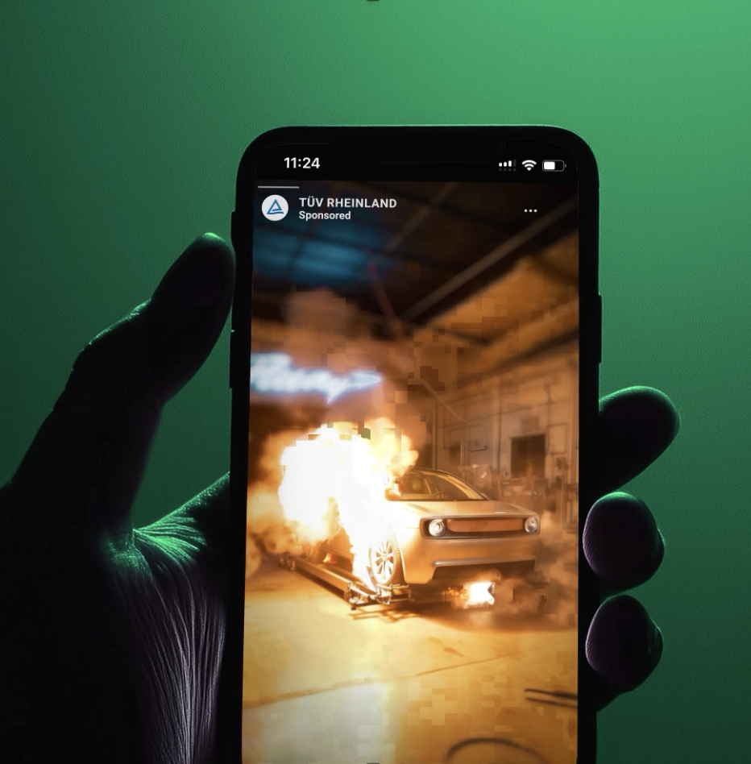
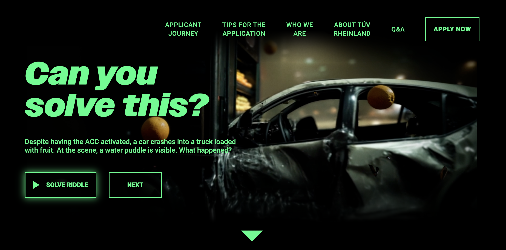
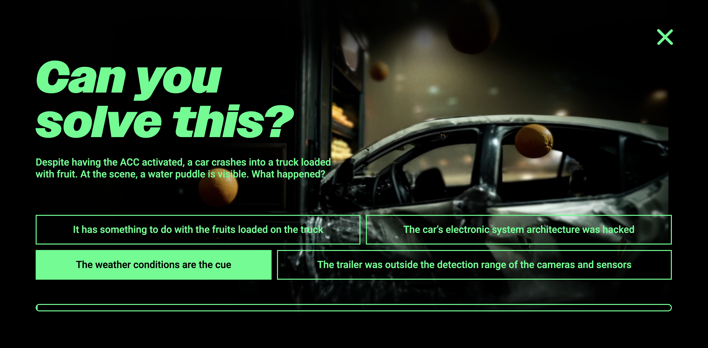
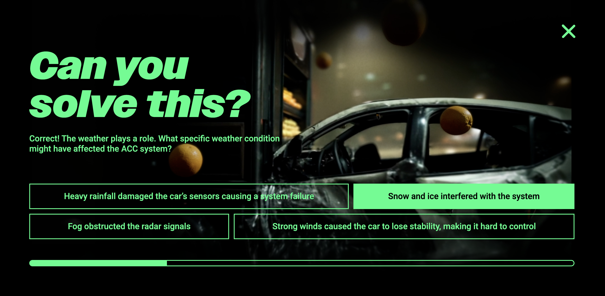
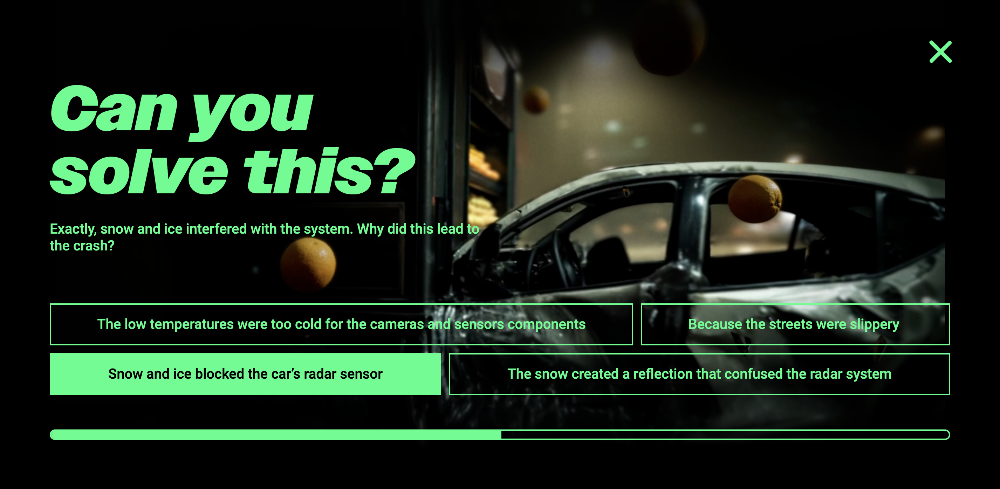
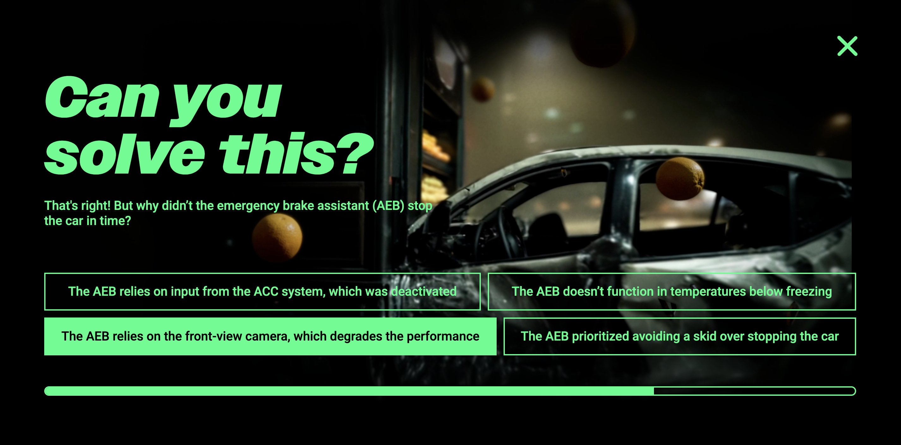
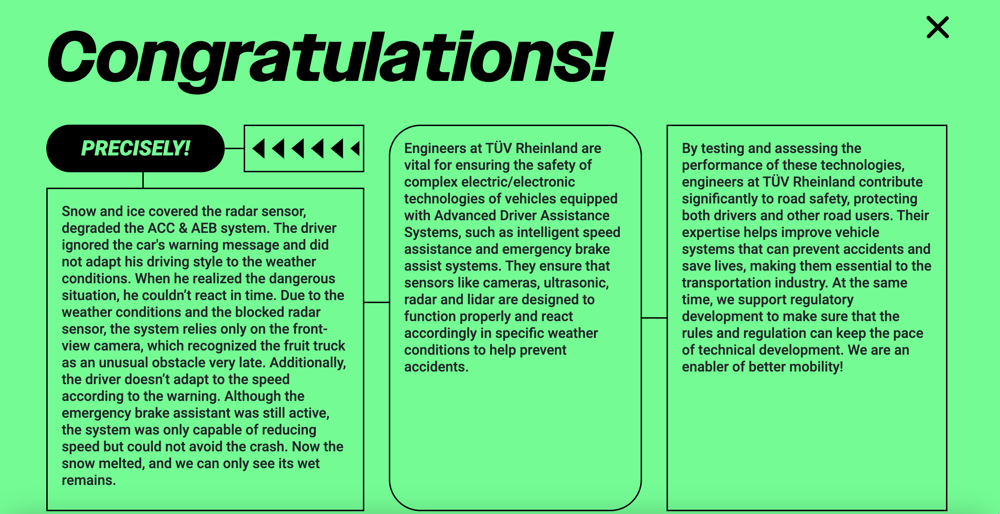

Text & Konzeption
TÜV Rheinland
Der TÜV Rheinland suchte für sein Trainee-Programm internationale Top-Absolvent:innen. Leider sind diese hart umworben. Wie schaffen wir es also, die besten Talente für uns zu begeistern? Indem wir die Bewerbung selbst zum Spiel werden lassen. Denn Ingenieur:innen lieben Herausforderungen.



Wir entwickelten eine Recruiting-Kampagne im Black-Stories-Format. Statt klassischer Stellenanzeigen galt es auf TikTok und Instagram mysteriöse Fälle zu lösen, die inhaltlich an die Themen des TÜV angelehnt waren.





